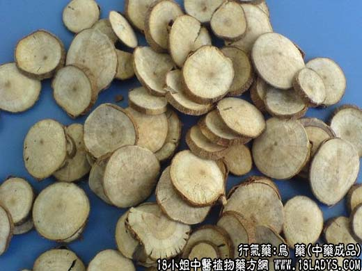

原文出处:本文转载自中药大全网。
原文连接:https://www.daquan.com/post/1975.html
原文连接:https://www.daquan.com/post/1975.html
_乌药的功效与作用0.png)

【中药概述】
乌药，别名：旁其、天台乌药、鳑魮、矮樟、矮樟根、铜钱柴、土木香、鲫鱼姜、鸡骨香、白叶柴，为樟科灌木或小乔木植物乌药的块根。辛，温。归肺、脾、膀胱经。
1．行气止痛：用于胸腹胀痛，寒郁气滞作痛之证，如<四味乌沉汤>。
2．温肾散寒：用于肾及膀胱虚寒所致的小便频数、遗尿等证，如<缩泉丸>、（医学发明<天台乌药散>）、（济阴纲目<乌药汤>）。
【药物形态】
本品多呈纺锤状，略弯曲，有的中部收缩成连珠状，长6～15cm，直径1～3cm。表面黄棕色或黄褐色，有纵皱纹及稀疏的细根痕。质坚硬。切片厚0.2～2mm，切面黄白色或淡黄棕色，射线放射状，可见年轮环纹，中心颜色较深。气香，味微苦、辛，有清凉感。 质老、不呈纺锤状的直根，不可供药用。
【药效鉴别】木香温燥，能通行三焦气分，尤善行脾胃大肠之气滞；香附性平，功偏疏肝解郁，并能调经止痛；乌药温散力强，长于散寒行气而止痛。
【临证应用】（济生方<四磨汤>）。用治七情郁结，上气喘急。
【药理作用】
1.可促进肠蠕动排除肠内积气。
2.乌药挥发油有促进呼吸、兴奋心肌、加速血循环、升血压作用。
3.有扩张血管作用。
【化学成分】含樟醇、龙脑、倍半萜、烯类、有机酸、乌药烃、内酯类等。
【用量用法】3——10g，水煎服，或入丸、散剂。